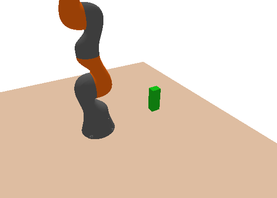

RSS takes only ~134 papers a year, single-track: everyone sees every talk. Read together they form one argument — learn the behaviour, or prove it — with a striking number of papers trying to marry the two. Three threads, taken slowly, mechanisms drawn live.
There have always been two answers to "how should a robot decide what to do." CoRL is almost entirely the first. What makes RSS distinct is that both camps are here, in force, in the same room — and the best work refuses to choose.
Skip the equations; fit behaviour to examples or a reward. Gift: flexibility — it handles messiness no equation captures. Cost: no proof. It works until it meets something its data never showed.
Model the dynamics, write the physics as equations, solve for the optimal action. Gift: guarantees — you can prove it stays in bounds. Cost: you must model everything, and the world is richer than any model.
The three threads below are that argument in motion: the learning wave, the classical core that keeps the guarantees, and the seam — language — where a learned model proposes and a checker disposes.
Start with the approach that is taking over: skip the equations, and fit the behaviour to examples. Show the robot the task — in demonstrations, in human video, in simulation — and let a network learn the mapping from what it sees to what to do. Its gift is flexibility: it handles messiness that no hand-written model captures.
The frontier at RSS 2024 is where the examples come from. Clean teleoperated demonstrations are expensive, so the field is learning to drink from everything else — grainy human video, another robot's logs, cheap simulation. The trouble is that each source lives in a different body, at a different quality, with a different gap from the real robot.
So the work here is plumbing between data sources: cross-embodiment representations that let a policy trained on one robot help another, ways to weight a noisy demonstration against a clean one, and diffusion policies that keep several valid moves alive instead of averaging them into mush. The wave is real, and it is powered by learning to reuse data no one used to be able to touch.
Showing 9 of 31 papers in this theme — the rest are in the RSS explorer.
Learning dexterous manipulation skills from limited demonstrations while generalizing across viewpoint, appearance, and instance variations with robust safety properties.
Diffusion policy conditioned on compact 3D visual representations extracted from sparse point clouds, leveraging 3D geometry to improve sample efficiency and generalization.
3D-conditioned diffusion policies achieve 85% success on real tasks with 40 demonstrations each and demonstrate superior safety properties vs. baselines through explicit 3D structure.
Large-scale robot manipulation learning requires diverse in-the-wild data spanning varied objects, scenes, and manipulation skills.
Large-scale manipulation dataset collected from multiple robotic platforms in diverse real-world settings.
Provides comprehensive in-the-wild manipulation dataset enabling learning of generalizable manipulation skills across diverse scenarios.
Learning dexterous robot manipulation from human demonstrations requires portable, occlusion-resistant hand motion capture integrated with scalable imitation learning methods.
Develop DexCap portable mocap system using SLAM and electromagnetic tracking for finger/wrist motion with 3D observations; combine with DexIL imitation algorithm using inverse kinematics and point cloud learning for human-to-robot skill transfer.
Demonstrates scalable human-like dexterity learning with 74 citations, including in-the-wild mocap data collection and human-in-the-loop refinement across six complex tasks.
Overcoming compounding execution errors in imitation learning when policies encounter out-of-distribution states without expensive data collection to cover failure modes.
Diffusion Meets DAgger (DMD) synthesizes out-of-distribution state samples using diffusion models instead of collecting them, providing DAgger benefits with few expert demonstrations.
Achieves 80% success in pushing with 8 demonstrations (vs 20% for BC) by synthetically augmenting training data with diffusion-generated OOD samples.
Diffusion-based imitation learning suffers from Gaussian-noise mismatch and poor performance with limited diffusion steps when the target policy significantly differs from Gaussian.
BRIDGeR leverages stochastic interpolants framework to bridge arbitrary source policies (not just Gaussian) to target policies, enabling flexible and efficient diffusion-based imitation learning.
Generalizes diffusion-policy imitation learning by allowing informative source policies, outperforming standard diffusion approaches on challenging benchmarks and real robots with theoretical justification.
End-to-end robot manipulation policies lack robustness to object pose and geometry variations, limiting generalization to unseen objects and configurations.
Discrete-continuous action representation combining what primitive type (grasp, push), where spatially-grounded location for contact, and how motion parameters (direction, orientation); chains primitives via RL with grounding to specific environment locations.
Spatial grounding of motion primitives enables effective generalization across object shape and pose; achieves zero-shot sim-to-real transfer on challenging long-horizon manipulation with unseen objects.
Learning generalizable robotic vision representations requires vast diverse data that is prohibitively expensive to collect on real robots.
Extracts hand/object/contact affordance labels from internet-scale human videos and uses them to pretrain vision representations for downstream robotic tasks.
Achieves 15% minimum performance improvement on 5 real-world tasks across diverse morphologies and improves generalization to out-of-distribution settings.
Cross-embodiment zero-shot policy transfer fails for vision-based policies due to robot visual disparities between source and target robots.
Applies cross-painting—masking the unseen target robot and inpainting the source robot during execution—to make vision-based policies appear robot-agnostic, combined with state-based Cartesian control with forward dynamics compensation.
Demonstrates successful zero-shot transfer of vision-based manipulation policies to unseen robot embodiments with minimal performance degradation, handling both first-person and third-person views without task-specific training.
Generalist robot policies must handle diverse sensors, action spaces, and platforms while finetuning efficiently to new domains.
Octo is a transformer-based policy pretrained on 800k Open X-Embodiment trajectories, supporting language and goal-image instruction with efficient finetuning to new sensory inputs and action spaces.
Demonstrates versatile multi-platform policy pretraining enabling rapid finetuning on standard GPUs, achieving effective transfer across 9 robotic platforms with architectural and data ablations.
Now the other camp — the one CoRL barely has, and the reason RSS feels different. Instead of fitting behaviour to data, you write down the physics as equations and solve for the action. The cost is that you must model everything. The gift is the thing learning cannot give you: a guarantee. You can prove the robot stays in bounds, respects a constraint, will not tip over or drive through a wall.
That proof matters most exactly where robots meet the world's hard edges — cluttered shelves, contact, tight corridors. The papers here are about squeezing a provably-good answer out of the equations fast enough to run on a real robot: turning a nasty contact-rich planning problem into one a computer can solve exactly, or computing control for a many-jointed body in milliseconds.
This is the rigor RSS keeps that the field could otherwise lose to the learning wave. A learned grasp policy that works 95% of the time is a demo. A planner that returns a path certified collision-free is something you can bolt to a machine and walk away from.

Showing 9 of 17 papers in this theme — the rest are in the RSS explorer.
Robot grasping requires balancing multiple conflicting criteria—stability, kinematic feasibility, and task functionality—with principled uncertainty handling.
Employ hierarchical rule-based probabilistic logic with a rank-preserving utility function, combined with hybrid gradient-based and gradient-free optimization (GRaCE-OPT) to navigate the non-convex utility surface.
Introduces a modular, probabilistic grasp ranking framework that achieves comparable or superior performance with fewer samples than existing methods.
Sequencing independently-learned manipulation primitives for long-horizon tasks is difficult without explicit symbolic goals, only geometric final configurations.
Formulate optimization via tensor train factorization of value function space; alternate between symbolic search and skill value optimization to find skill skeleton and optimal subgoal sequences.
Identifies optimal skill sequences with superior cumulative reward approximation versus reinforcement learning, validated on prehensile and non-prehensile manipulation with real-world disturbance robustness.
Learning robot policies with provable hard constraint satisfaction, where soft constraint rewards are insufficient for safety-critical applications.
Learns policies affine around unsafe set creating repulsive buffer; applies affine region as explicit constraint enforcement in closed-loop with black-box environment.
First RL algorithm guaranteeing hard constraint satisfaction in closed-loop; applicable to continuous/discrete spaces and algorithm-agnostic with superior performance to soft methods.
Retrieving a target object from cluttered scenes requires inferring support relations among tightly packed objects to plan a safe manipulation sequence.
Recursively broadcast local object dynamics and contact information to build a graph of support relations, reducing inference complexity and enabling efficient planning.
Support relation inference via local dynamics broadcasting outperforms global inference methods, improving object retrieval success in simulated and real cluttered scenes.
Robot manipulation planning must simultaneously reason about geometric safety and joint-level feasibility, traditionally split across task and configuration space.
Configuration Space Distance Field (CDF)—a signed distance field computed directly in joint-angle space—enabling unified optimization, control, and learning for collision avoidance.
Demonstrates that SDFs in configuration space, augmented with neural MLP representations, accelerate manipulation planning and inverse kinematics while maintaining safety guarantees.
Multi-agent path finding in narrow corridors (e.g., doorways) is computationally expensive; experience-based methods were limited to open warehouse-like spaces.
Experience-based MAPF specialized for width-1 corridors with novel conflict resolution reducing waiting steps by 94% and improving path quality by 71% vs. existing methods.
Extends experience-based planning to constrained environments like homes and offices; solves hundreds-of-robot problems in seconds.
Navigation through narrow gaps requires tight reach-avoid planning, but existing reachability analysis methods over-approximate error sets, preventing goal-reaching in constrained spaces.
PARC uses piecewise affine reach-avoid computation with careful planning model selection and time-varying error handling to tightly approximate reachable sets, enabling safe narrow-gap navigation.
Reduces conservatism of reach-avoid planning through tight piecewise affine reachable set approximation, enabling provably-safe extreme vehicle maneuvers and narrow-gap navigation.
Providing safety and performance guarantees for nonlinear hybrid dynamical systems with discrete mode switching, critical for contact-rich robotic tasks.
Extends Hamilton-Jacobi reachability analysis from continuous systems to hybrid systems; computes reachable sets with generalized value functions over discrete and continuous states.
First HJ reachability framework for hybrid systems with multiple modes and commanded/forced transitions; provides optimal safety-aware mode planning for legged robots.
Simultaneous planning of multiple agent paths with spatial and topological constraints is nontrivial; applies to deformable object keypoints and swarms in complex environments.
Extended visibility check for sparse passage distribution; passage-aware optimal path planning with sampling-based planners; deformable path transfer for centralized path set generation respecting homotopic properties.
Systematic pipeline for homotopic path set planning with efficient passage accommodation and short path length; validated on deformable object and swarm problems.
The most-watched theme sits on the seam between the two camps. Large language and vision-language models carry an enormous amount of common sense about objects, places, and tasks — knowledge no one wants to hand-code. Point that at a robot and, in principle, you can command it in plain English.
But words are loose and robots are precise. A language model will happily say 'grasp the handle' whether or not the handle is reachable, whether or not the plan is safe. Language supplies the intent; it cannot supply the guarantee. So the real work is grounding — tying each word to something the robot can actually see and do — and verification: checking the language model's suggestion against geometry and constraints before the arm moves.
That is why this theme is the through-line of the whole conference in miniature. The learned model (the LLM) proposes the messy, human part; a checker or a planner disposes, keeping only what is physically possible. Learning supplies the model, math supplies the proof — and language is where the handoff is happening in the open.
Showing 9 of 19 papers in this theme — the rest are in the RSS explorer.
Capturing dynamic initial task state in LLM-based planning while handling incomplete information and missing objects during execution.
Affordance-based scene representation with automatic Object Affordance Mapping via ChatGPT; combines with planning to correct semantic/syntactic errors and handle open-world scenarios.
LLM planning with affordance grounding achieving 98% success on SayCan and 79% on complex multi-step tasks with missing objects; handles incomplete information and scene exploration.
General-purpose mobile manipulation requires integrating vision, language, navigation, and grasping models, but integration challenges limit performance.
OK-Robot—systems-first integration of VLMs for object detection, learned navigation primitives, and grasping primitives; no training required, leverages open knowledge models.
Achieves 58.5% success in open-vocabulary pick-and-drop (82% in uncluttered scenes), 1.8x prior work; demonstrates importance of nuanced integration details over model capability alone.
Deploying mobile robots for long-term autonomous navigation with multimodal goals (categories, images, language) in unseen environments.
Modular system with continually-augmented instance-aware semantic memory tracking appearance and semantics; learns from exploration improving with experience.
Multimodal lifelong navigation achieving 83% success across 675 goals in 9 homes; improves from 60% to 90% with environment experience, platform-agnostic across embodiments.
Robots struggle with long-horizon planning tasks when they lack learned abstract state representations and symbolic operator knowledge, limiting generalization across task variations.
LLM-powered framework that learns symbolic predicates from human language feedback during embodied interaction; compiles learned predicates and operators into PDDL domain for planning with a classical planner.
Demonstrates strong generalization of learned predicates and operators to novel high-complexity tasks (73% sim, 40% real success) despite training only on simpler tasks.
Leveraging VLMs for open-world manipulation requires bridging free-form language instructions and VLM predictions to deployable robot actions.
MOKA uses mark-based visual prompting to convert affordance reasoning into VQA problems solvable by VLMs, generating point-based affordance representations that map to robot end-effector motions.
Enables zero-shot and few-shot manipulation from language instructions by prompting VLMs with visual marks, supporting diverse behaviors including tool use and deformable object manipulation.
Generalizing vision-and-language navigation across out-of-distribution scenes and sim-to-real gaps without maps, odometers, or depth inputs.
Video-based VLM that processes monocular RGB streams to directly output next-step actions, leveraging spatio-temporal context from video to encode navigation history.
State-of-the-art VLN performance with natural human-like navigation that eliminates odometer noise and depth estimation gaps, demonstrating superior cross-dataset and sim-to-real transfer.
Predicting and reasoning about physical object properties that require tactile interaction beyond visual and language modalities alone.
Combines GelSight tactile sensor perception with vision-language model (VLM) reasoning; learns tactile representations and applies language fine-tuning for property inference.
First tactile-language integration for embodied physical reasoning; new PHYSICLEAR dataset with annotated tactile videos enabling touch-aware property prediction.
Achieving explainable and generalizable autonomous driving through MLLMs while addressing data scarcity, domain gaps, and catastrophic forgetting without expensive retraining.
Retrieval-augmented multi-modal LLM using in-context learning grounded in expert demonstrations, avoiding fine-tuning by leveraging retrieved examples for context.
State-of-the-art performance on driving action explanations and zero-shot generalization to unseen environments without post-deployment training via retrieval-augmented in-context learning.
Semantic part labels often mismatch functional parts for manipulation, complicating generalization to diverse articulated objects under language instructions.
SAGE bridges semantic parts to Generalizable Actionable Parts (GAParts) carrying motion information, using joint reasoning from VLMs and small domain models to interpret instructions and ground end-effector trajectories.
Achieves language-conditioned manipulation of diverse articulated objects by jointly modeling semantic and functional parts, with interactive feedback for robustness.
CoRL asks can the robot learn this? RSS asks a second question on top: and can you prove it will hold? 2024's RSS is the field trying to keep both answers — the flexibility of learning and the guarantees of math — in the same machine at once.